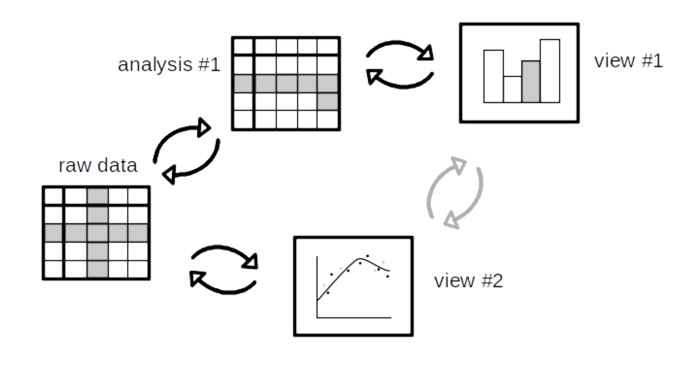

Why is this a programming languages problem? Well, to implement linking in a domain-general way ultimately requires a new kind of programming language semantics – not a new kind of language, but rather a new style of semantics that relates parts of programs to parts of their outputs in a fine-grained way. Fluid builds on such an approach, called Galois slicing, which we are adapting to the linking problem for data visualisation. The approach involves a bidirectional dynamic analysis which (minimally) relates parts of the code and data to the parts of visualisations and other outputs that they contribute to. By round-tripping this analysis via the raw data (black arrows below), it is possible to link selections in one view to selections in another in a precise way (grey arrows):

A 5-month pilot project to prototype this idea was supported by The Alan Turing Institute from January to May 2019, through their AI for Science and Government programme. The project was developed and led by Roly Perera and Tomas Petricek.
Fluid is now being developed as part of a new project with collaborators at University of Bristol (Dr. Meng Wang and PhD student Minh Nguyen). We are extending the linked selection feature to derive concise computational summaries which “explain” how a particular visual element or attribute was computed from data. For example, a reader viewing a histogram will be able to select the width attribute of a bin (say by moving the mouse cursor near to an appropriate anchor) and the chart will respond by displaying a formula explaining how the bin size was calculated.
This kind of transparency matters in a scientific context because decisions with important consequences are often buried in data analysis or visualisation logic. Histogram bin size, for example, affects our ability to perceive missing values. Making such decisions transparently discoverable from research artefacts, using features like the one just described, will make it easier for scientists and lay readers alike to evaluate scientific claims. We are also developing a new implementation in PureScript.